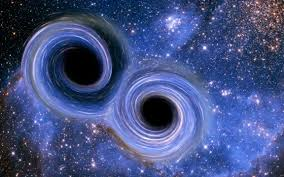
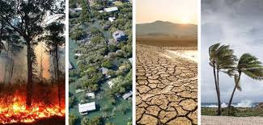

Nổi bật
Khám phá bí ẩn vũ trụ: Từ Big Bang đến tương lai
Hành trình khám phá vũ trụ từ vụ nổ lớn đến những khám phá mới nhất về vật chất tối và năng lượng tối.
Nguyễn Văn A • 8 phútKhám phá những tin tức khoa học và thiên nhiên hấp dẫn nhất
Hành trình khám phá vũ trụ từ vụ nổ lớn đến những khám phá mới nhất về vật chất tối và năng lượng tối.
Nguyễn Văn A • 8 phút
Bảo tồn đa dạng sinh học trong thời đại biến đổi khí hậu.

Những tiến bộ mới trong công nghệ thám hiểm không gian.
Tất cả bài viết về vũ trụ và thiên nhiên
Dữ liệu từ James Webb Space Telescope cho thấy sự tồn tại của hơi nước và một số hợp chất hữu cơ trong khí quyển của các ngoại hành tinh gần Trái Đất. Đây là bước tiến quan trọng trong việc tìm kiếm sự sống ngoài hành tinh. Các nhà khoa học đánh giá rằng những phát hiện này có thể giúp hiểu rõ hơn về điều kiện hình thành và phát triển của sự sống. Đồng thời, nó mở ra cơ hội cho các sứ mệnh thám hiểm không gian trong tương lai. Việt Nam cũng đang từng bước tham gia vào các chương trình nghiên cứu vũ trụ thông qua hợp tác quốc tế.
Trần Khoa Y • 6 phút
LIGO đã ghi nhận thêm nhiều tín hiệu sóng hấp dẫn phát ra từ các vụ va chạm giữa các hố đen trong vũ trụ. Những tín hiệu này cung cấp thông tin quý giá về khối lượng, tốc độ và cấu trúc của các vật thể cực lớn. Nhờ đó, các nhà khoa học có thể hiểu rõ hơn về quá trình tiến hóa của vũ trụ. Công nghệ đo sóng hấp dẫn cũng góp phần thúc đẩy nhiều lĩnh vực khoa học hiện đại. Đây được xem là một trong những thành tựu nổi bật của vật lý thiên văn thế kỷ 21
Lê Minh Huy • 5 phútCác chuyên gia cảnh báo những đợt bão Mặt Trời mạnh có thể gây nhiễu tín hiệu vệ tinh và hệ thống định vị toàn cầu (GPS). Hiện tượng này xảy ra khi các luồng plasma từ Mặt Trời va chạm với từ trường Trái Đất. Hậu quả có thể ảnh hưởng đến hàng không, vận tải biển và các hệ thống liên lạc. Trong bối cảnh phụ thuộc lớn vào công nghệ, rủi ro này ngày càng được quan tâm. Việt Nam cũng đang theo dõi sát sao các dự báo để đảm bảo an toàn cho hạ tầng số.
Phạm Lan Anh • 4 phút
Theo IPCC, biến đổi khí hậu đang làm gia tăng tần suất và cường độ của các hiện tượng thời tiết cực đoan trên toàn cầu. Tại Việt Nam, tình trạng nắng nóng kéo dài, mưa lớn và xâm nhập mặn ngày càng nghiêm trọng. Điều này ảnh hưởng trực tiếp đến đời sống người dân và hoạt động sản xuất. Các chuyên gia nhấn mạnh cần có giải pháp phát triển bền vững và bảo vệ môi trường. Đồng thời, nâng cao nhận thức cộng đồng là yếu tố then chốt để ứng phó lâu dài.
Nguyễn Đức Vinh • 7 phútNhững bài phân tích chuyên sâu về khoa học và môi trường
Phân tích chi tiết về những thay đổi trong hệ sinh thái và đề xuất giải pháp bảo tồn.
Phân tích • 12 phút đọcCách AI đang thay đổi cách chúng ta khám phá và hiểu về vũ trụ.
Phân tích • 10 phút đọcĐăng ký nhận bản tin để không bỏ lỡ những cập nhật về khoa học và thiên nhiên
Những chủ đề đang được quan tâm nhất
1.2K bài viết
890 bài viết
756 bài viết